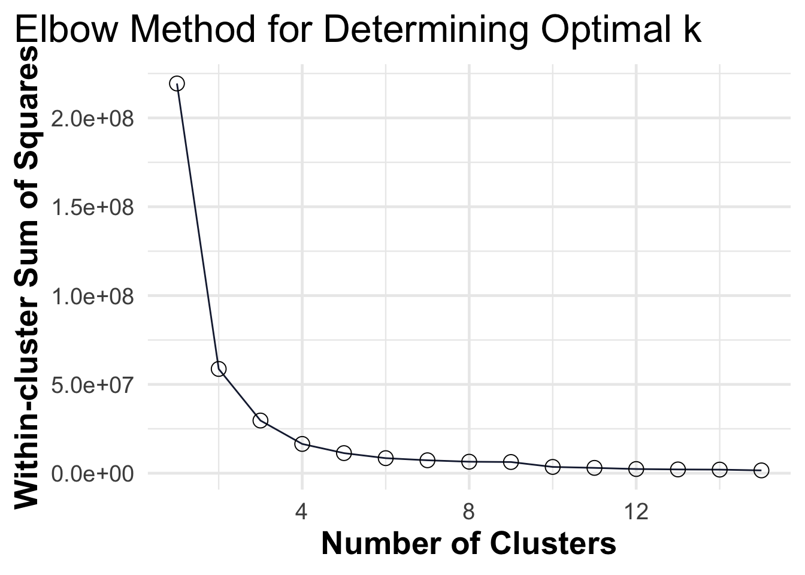

Readings and class materials for Tuesday, October 31, 2023
Cluster analysis is a powerful technique used to group similar observations together based on their characteristics and relationships. The goal of clustering is to identify patterns and structures within a dataset, allowing us to gain insights and make meaningful interpretations. By dividing objects into sets of clusters, we can uncover hidden similarities and differences, enabling us to understand the underlying structure of the data.
One of the key ideas in clustering is that objects within a cluster should be similar or related to each other, while being different or unrelated to objects in other clusters. This notion of similarity and dissimilarity forms the basis for grouping objects together. The greater the similarity within a cluster and the greater the difference between clusters, the more distinct and meaningful the clustering becomes.
However, determining what constitutes a cluster can be challenging. The definition of a cluster is not always well-defined and can vary depending on the nature of the data and the desired results. Different clustering techniques exist, each with its own approach to dividing objects into clusters. Some techniques focus on finding central points or prototypes, while others consider the density or connectivity of the data. Ultimately, the choice of clustering method depends on the specific goals and characteristics of the dataset.
In this chapter, we will explore the different types of clustering techniques and how they can be applied to real-world problems. We will also discuss the advantages and disadvantages of each method and how to evaluate the results. Let’s look at some practical examples of clustering in action:
Market Segmentation: Clustering can be employed to segment customers based on their purchasing behavior, preferences, or demographic characteristics. By identifying distinct customer groups, businesses can tailor their marketing strategies and offerings to better meet the needs and preferences of each segment. This can lead to more targeted advertising campaigns, improved customer satisfaction, and increased sales.
Financial Portfolio Analysis: Clustering can assist in analyzing financial portfolios by grouping stocks or assets with similar price fluctuations or risk profiles. This helps investors diversify their portfolios effectively and make informed decisions based on the characteristics of different clusters. By understanding the relationships and patterns within clusters, investors can optimize their investment strategies and manage risk more efficiently.
Economic Development and Regional Planning: Clustering can aid in identifying regions or areas with similar economic characteristics or development potential. This information can be used by policymakers and urban planners to allocate resources, attract investments, and promote economic growth in specific regions. Clustering can also help identify industries or sectors that are thriving in certain areas, enabling policymakers to focus on supporting and nurturing those sectors further.
Customer Behavior Analysis: Clustering can be utilized to analyze customer behavior, such as purchasing patterns, preferences, or churn prediction. By grouping customers into clusters based on their behavior, businesses can gain insights into customer segments with similar characteristics. This information can be leveraged to personalize marketing campaigns, improve customer retention strategies, and enhance overall customer satisfaction.
Hierarchical clustering is a clustering technique that aims to create a hierarchical structure of clusters in a dataset. It produces a set of nested clusters organized in the form of a tree-like diagram called a dendrogram. This dendrogram represents the sequences of merges or splits of clusters.
There are two main types of hierarchical clustering: agglomerative and divisive. Agglomerative hierarchical clustering starts with each data point as an individual cluster and then iteratively merges the closest pair of clusters at each step (you will mainly meet with this approach). This process continues until all data points are merged into a single cluster or until a desired number of clusters is reached. Divisive hierarchical clustering, on the other hand, starts with one cluster containing all data points and then splits clusters at each step until each cluster contains only one data point or until a desired number of clusters is obtained.
Step-by-step
Compute the proximity matrix
Let each data point be a cluster
Repeat
Merge the two closest clusters
Update the proximity matrix
Until only a single cluster remains
Hierarchical clustering does not require specifying the number of clusters in advance, allowing for flexibility in the analysis. It can be visualized using a dendrogram, which displays the cluster-subcluster relationships and the distances between clusters. By “cutting” the dendrogram at a certain level, any desired number of clusters can be obtained.
One advantage of hierarchical clustering is that it can capture both global and local structures in the data. It can reveal meaningful taxonomies or hierarchical relationships among the data points. Additionally, hierarchical clustering can be used with various proximity measures, allowing for flexibility in defining cluster similarity.
The choice of proximity measure in clustering depends on the type of data being analyzed. Here are some commonly used proximity measures:
Proximity
Euclidean Distance (L2 Distance): The Euclidean distance is a popular proximity measure for numerical data in Euclidean space. It calculates the straight-line distance between two data points in a multidimensional space. The Euclidean distance between two points, x and y, in a d-dimensional space is given by the formula:
\[ \sqrt{\sum_{i=1}^{d}(x_i - y_i)^2} \]
Manhattan Distance (L1 Distance): The Manhattan distance, also known as the city block distance or taxicab distance, is often used for numerical data. It measures the sum of the absolute differences between the coordinates of two points. The Manhattan distance between two points, x and y, in a d-dimensional space is given by the formula:
\[ \sum_{i=1}^{d}\|x_i - y_i\| \]
Jaccard Similarity: The Jaccard similarity is often used for binary or categorical data. It measures the size of the intersection divided by the size of the union of two sets. The Jaccard similarity between two sets, A and B, is given by the formula:
\[ \frac{{|A \cap B|}}{{|A \cup B|}} \]
This approach is particularly useful in applications such as document recommendation systems, plagiarism detection, or topic modeling, where understanding the similarity between documents is crucial for effective analysis and decision-making. The Jaccard similarity provides a straightforward and intuitive measure to quantify the similarity between sets of binary or categorical data, making it a valuable tool in various information retrieval and text mining tasks.
Gower distance: Gower distance is a proximity measure commonly used in clustering for datasets that contain a mix of numerical, categorical, and ordinal variables. It is particularly useful when dealing with heterogeneous data types. Gower distance takes into account the different scales and types of variables in the dataset.
The Gower distance is calculated as the weighted sum of the absolute differences between variables, normalized by the range of each variable. The formula for calculating the Gower distance between two data points, x and y, is as follows:
where n is the number of variables, \(d_i(x_i, y_i)\) is the distance or dissimilarity measure between the values of variable \(i\) for data points \(x\) and \(y\), and \(w_i\) is the weight assigned to variable \(i\). The weights can be used to give more importance to certain variables in the calculation of the distance.
The Gower distance can handle different types of variables, such as numerical, categorical, and ordinal, by using appropriate distance measures for each variable type. For numerical variables, the absolute difference is typically used. For categorical variables, the distance is 0 if the categories are the same and 1 if they are different. For ordinal variables, a suitable distance measure that considers the order or ranking of the categories is used.
By incorporating the characteristics of different variable types, the Gower distance provides a comprehensive measure of dissimilarity that can effectively handle mixed data types in clustering analysis.
These are just a few examples of proximity measures commonly used in clustering. The choice of measure depends on the nature of the data and the specific requirements of the clustering task.
Overall, hierarchical clustering is a versatile and intuitive method for grouping data points into clusters based on their similarities, providing a hierarchical structure that can aid in understanding the relationships and structures within the data.
Merging the closest clusters
In hierarchical clustering, the process of merging clusters is a key step in creating the hierarchical structure. One commonly used method for cluster merging is Ward’s method.
Ward’s method calculates the proximity between two clusters based on the increase in the squared error that occurs when the clusters are merged. The objective is to minimize the increase in the total within-cluster sum of squares (SSE) when merging clusters.
To perform cluster merging using Ward’s method, the following steps are typically followed:
Start with each data point as an individual cluster.
Calculate the proximity between all pairs of clusters. This can be done using a proximity measure such as Euclidean distance.
Merge the two clusters that result in the smallest increase in the SSE when combined. This is determined by comparing the proximity values.
Update the proximity matrix to reflect the merged cluster.
Repeat steps 3 and 4 until all data points are in a single cluster or until a desired number of clusters is reached.
Ward’s method is known for its ability to handle clusters of different sizes and shapes. It aims to minimize the distortion caused by merging clusters and produces compact, well-separated clusters. However, it can be computationally expensive and may not be suitable for large datasets.
It’s important to note that there are other methods for cluster merging in hierarchical clustering, such as single-linkage, complete-linkage, and average-linkage. Each method uses a different criterion to determine the proximity between clusters and has its own strengths and weaknesses. The choice of merging method depends on the specific requirements of the clustering task and the characteristics of the data.
library(eurostat)# GDP per capita in PPS (Purchasing Power Standards)gdp_per_capita<-get_eurostat("tec00114")%>%select(geo, time, gdp_per_capita =values)# Unemployment rateunemployment_rate<-get_eurostat("tesem140")%>%filter(sex=="T")%>%select(geo, time, unemployment_rate =values)# Life expectancy at birthlife_expectancy<-get_eurostat("sdg_03_10")%>%filter(sex=="T")%>%select(geo, time, life_expectancy =values)# R&D index - Human Resources in Science and Technology (HRST)education_index<-get_eurostat("hrst_st_rcat")%>%filter(str_length(geo)==2, category=="HRST", unit=="PC_ACT")%>%select(geo, time, education_index =values)# Gini coefficient - measure of income inequalitygini_coefficient<-get_eurostat("ilc_di12")%>%select(geo, time, gini =values)# Government debt as a percentage of GDPpublic_debt<-get_eurostat("gov_10dd_edpt1")%>%filter(str_length(geo)==2, unit=="MIO_EUR", sector=="S13", na_item=="B9")%>%select(geo, time, public_debt =values)# Join the datasets together on the 'geo' and 'time' columnseu_indicators<-gdp_per_capita%>%inner_join(unemployment_rate, by =c("geo", "time"))%>%inner_join(life_expectancy, by =c("geo", "time"))%>%inner_join(education_index, by =c("geo", "time"))%>%inner_join(gini_coefficient, by =c("geo", "time"))%>%inner_join(public_debt, by =c("geo", "time"))%>%filter(time==max(time))%>%select(-time)eu_indicators%>%gt()%>%gt_finalise()
What is the result? For example, France is close to Italy. Why? In terms of educational index, they are very far apart. Germany is most similar to Spain, but they are very far apart in terms of GDP per capita and unemployment. However, these countries are similar in terms of public debt! If distance is a simple Euclidean distance, then greater variability in absolute value distorts the analysis. Therefore, it is worth eliminating the units of measurement. One possible solution for this is standardization, which means subtracting the mean and dividing the standard deviations of the individual variables.
Now the results are different. France is close to Germany, and CEE countries to each other.
K-means clustering
K-means clustering is a popular algorithm used for partitioning a dataset into K distinct clusters. It is a partitional clustering approach, where each cluster is represented by a centroid, which is the center point of the cluster. The algorithm assigns each data point to the cluster with the closest centroid based on a distance measure, typically the Euclidean distance.
Step-by-step
Initialization: Randomly select K data points as the initial centroids or use a different initialization method. These initial centroids represent the initial cluster centers.
Assignment: Assign each data point to the cluster with the nearest centroid based on the chosen distance measure. This step forms K clusters.
Update: Recalculate the centroids of each cluster by taking the mean of the data points assigned to that cluster. The centroids represent the new cluster centers.
Iteration: Repeat steps 2 and 3 until convergence is reached. Convergence occurs when the centroids no longer change significantly or when a maximum number of iterations is reached.
The algorithm aims to minimize the within-cluster sum of squares (WCSS), which represents the sum of squared distances between each data point and its assigned centroid. By minimizing the WCSS, K-means tries to create compact and well-separated clusters.
palmerpenguins::penguins%>%select(where(is.numeric))%>%na.omit()%>%mutate(cluster =fit$cluster)%>%ggplot(aes(x =bill_length_mm, y =bill_depth_mm, color =factor(cluster)))+geom_point()
It’s important to note that K-means requires the number of clusters, K, to be specified in advance. Choosing an appropriate value for K can be determined through domain knowledge or by using techniques like the elbow method or silhouette analysis.
# Compute and plot wss for k = 1 to k = 15wss<-map_dbl(1:15, function(k){palmerpenguins::penguins%>%select(where(is.numeric))%>%na.omit()%>%kmeans(centers =k)%>%pluck("tot.withinss")})elbow_plot<-data.frame(k =1:15, wss =wss)ggplot(elbow_plot, aes(x =k, y =wss))+geom_line()+geom_point()+ggtitle("Elbow Method for Determining Optimal k")+xlab("Number of Clusters")+ylab("Within-cluster Sum of Squares")

K-means clustering is widely used in various fields, including data mining, image segmentation, customer segmentation, and pattern recognition. It is relatively efficient and easy to implement, making it a popular choice for clustering tasks. However, it has limitations, such as sensitivity to initial centroid selection and the assumption of spherical-shaped clusters.
Silhouette Indicator
The silhouette indicator is a metric used to evaluate the quality of clusters formed by clustering algorithms. This technique measures how similar each object in a cluster is to the objects in its own cluster compared to the nearest neighboring cluster. The silhouette indicator ranges from -1 to 1, where a high value indicates that the object is well-matched to its own cluster and poorly matched to neighboring clusters. Conversely, a low value suggests that the object is close to the boundary of its cluster and may be wrongly classified (Rousseeuw, 1987).
For each sample \(i\), the silhouette value \(s(i)\) is computed as:
\[
s(i)=\frac{b(i)−a(i)}{max({a(i),b(i))}}
\]
Where:
\(a(i)\) is the average distance from the ith sample to the other samples in the same cluster.
\(b(i)\) is the smallest average distance from the ith sample to the samples in the other clusters, minimized over clusters.
Interpretation
s(i)≈1: The sample is well clustered.
s(i)≈0: The sample is close to the decision boundary between two clusters.
s(i)≈−1: The sample is incorrectly clustered.
The mean \(s(i)\) over all points of a cluster is a measure of how tightly grouped all the points in the cluster are. Thus the mean s(i) over all data of the entire dataset is a measure of how appropriately the data have been clustered.
Alternatives
K-medoids
Step-by-step
Initialization: Randomly select k: data points (not centroids) to serve as the initial medoids.
Assignment: Assign each data point to the nearest medoid based on a chosen distance metric, such as Euclidean, Manhattan, or more domain-specific metrics.
Update: For each medoid m and each non-medoid data point o:
Swap m and o, and compute the total cost (i.e., the sum of distances from all points to their nearest medoid).
If the total cost of the configuration decreases, accept the swap and update the medoid to o.
Convergence Check: Repeat the Assignment and Update steps until the medoids no longer change or a maximum number of iterations is reached.
K-proto
Step-by-step
Initialization: Select K initial prototypes, one for each cluster. Each prototype is a point in the feature space and has both numerical and categorical attributes.
Assignment: Assign each data point to the nearest prototype. The distance to a prototype is calculated as a weighted sum of the Euclidean distance for numerical attributes and a simple matching dissimilarity measure for categorical attributes. \(D(x, y) = a × D_{Euclidean} (2_{num}, Y_{num}) + (1 - a) × Categorical (2_{cat} > Y_{cat})\) where a is a weighting factor between O and 1, \(num\) and \(Y_{num}\) are the numerical attributes, and cat and \(Y_{cat}\) are the categorical attributes.
Update: Recalculate the prototypes for each cluster as the point that minimizes the sum of distances to all points in the cluster. For numerical attributes, this is the mean, and for categorical attributes, this is the mode.
Convergence Check: If the prototypes do not change significantly or a maximum number of iterations is reached, stop the algorithm. Otherwise, go back to the Assignment step.